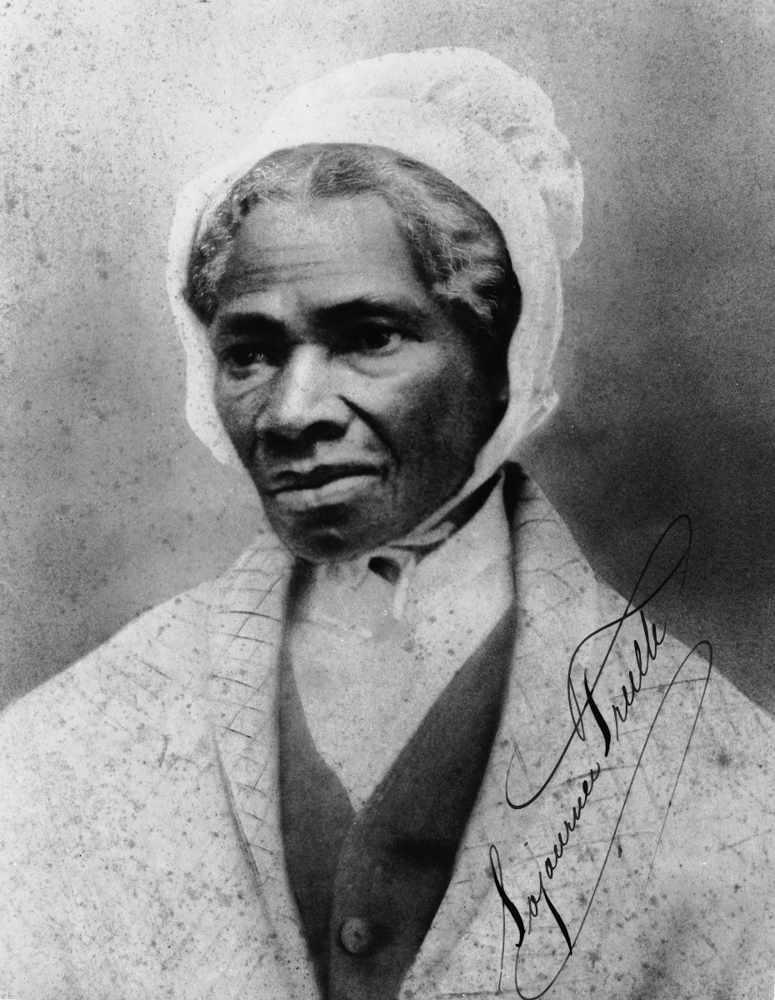

Sojourner Truth
Marius Robinson, report in Salem, OH
Anti-Slavery Bugle, June 21, 1851
One of the most unique and interesting speeches of the convention was made by Sojourner Truth, an emancipated slave. It is impossible to transfer it to paper, or convey any adequate idea of
the effect it produced upon the audience. Those only can appreciate it who saw her powerful form, her whole-souled, earnest gesture, and listened to her strong and truthful tones. She came
forward to the platform and addressing the President said with great simplicity: "May I say a few words?" Receiving an affirmative answer, she proceeded:
want to say a few words about this matter. I am a woman's rights.
have as mu>ch muscle as any man, and can do as much work as any man. I have plowed and reaped and husked and chopped and mowed, and can any man do more than that?
have heard much about the sexes being equal. I can carry as much as any man, and can eat as much too, if I can get it. I am as strong as any man that is now. As for intellect, all I can say is, if a woman have a pint, and a man a quart -- why can't she have her little pint full? You need not be afraid to give us our rights for fear we will take too much, -- for we can't take more than our pint'll hold. The poor men seems to be all in confusion,and don't know what to do. Why children, if you have woman's rights, give it to her and you will feel better. You will have your own rights, and they won't be so much trouble.
can't read, but I can hear. I have heard the bible and have learned that Eve caused man to sin. Well, if woman upset the world, do give her a chance to set it right side up again. The Lady has spoken about Jesus, how he never spurned woman from him, and she was right. When Lazarus died, Mary and Martha came to him with faith and love and besought him to raise their brother. And Jesus wept and Lazarus came forth. And how came Jesus into the world? Through God who created him and the woman who bore him. Man, where was your part? But the women are coming up blessed be God and a few of the men are coming up with them. But man is in a tight place, the poor slave is on him, woman is coming on him, he is surely between a hawk and a buzzard.